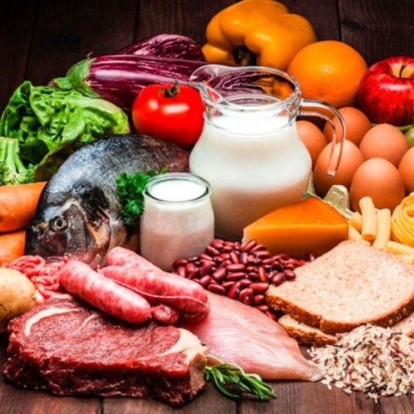

Qual recomendação para uma alimentação saudável nessa época de Pandemia?
Uma alimentação adequada e saudável é primordial para a manutenção da saúde e contribui para manter o sistema imunológico em ótimas condições. Além de ter mais disposição e energia, uma pessoa com a alimentação saudável é menos suscetível a ter algumas doenças, como: obesidade, câncer, artrite, anemia, diabetes e hipertensão.
Uma boa alimentação pode parecer difícil de se manter, mas tudo é uma questão de hábito e persistência. Para um primeiro passo em busca de uma vida saudável, avalie a qualidade dos seus pratos.
Durante uma pandemia a alimentação necessita de o cuidado redobrado, e nesse sentido é importante fazer melhores escolhas alimentares e optar por alimentos frescos e variados, ricos em vitaminas, minerais, fibras e compostos bioativos. É fundamental manter também uma boa hidratação. Além disso, devem ser adotadas medidas de higiene para evitar as contaminações.
Quais os alimentos mais recomendados e que ajudam aumentar a imunidade?
Para estimular o sistema imunológico deve-se optar sempre por refeições coloridas e variadas. Alimentos in natura e minimamente processados (frutas, legumes, verduras, cereais integrais, oleaginosas, proteínas) contém vitaminas, minerais, fibras e compostos bioativos que condicionam um sistema imunológico mais eficiente, com menor risco de doenças, desde que essa alimentação seja habitual. Destaca-se que a alimentação adequada e saudável é aliada da imunidade, mas não evita o contágio, por este motivo é importante que sejam adotadas as medidas preventivas recomendadas pela Organização Mundial de Saúde (OMS).